Now that you’ve set up your computer with all the tools you’ll need,
it’s time to get started!
Over the course of this Tutorial, you’ll build and deploy your first
Gatsby site: a blog site with support for images and MDX! (If that
doesn’t mean anything to you now, that’s okay! It will by the time
you reach the end.) Here’s a
finished example
of the site you’ll build.
In this part of the Tutorial, you will go through the process of
creating the template for your blog site and deploying it online for
everyone to see.
The diagram below shows a high-level view of how all the pieces of
this process fit together. (Don’t worry if this doesn’t make sense
yet. You’ll learn about each step as you go.)
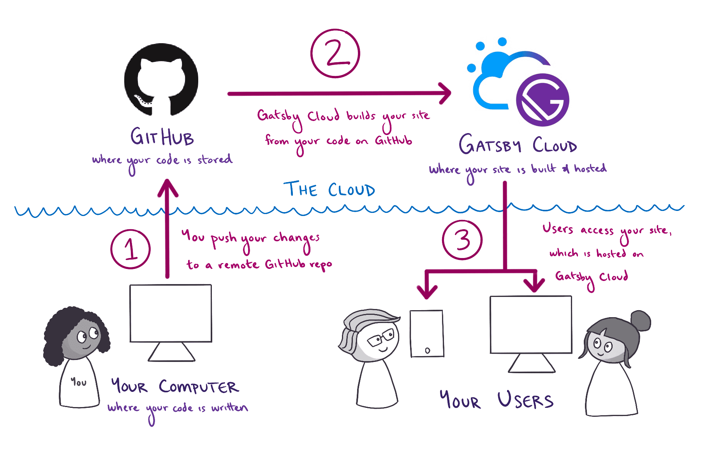
Expand for detailed description
First, you write the code for your Gatsby site from your computer.
When you’re ready to make your changes live on the internet, you
go through the following steps:
-
You push your changes from your computer to a remote repository
on GitHub. GitHub is an online platform for storing code for
your projects.
-
Gatsby Cloud watches your GitHub repository for changes. When it
sees your new changes, Gatsby Cloud builds your site from your
code on GitHub.
-
Gatsby Cloud hosts the finished version of your site at a unique
URL, which users can use to access the latest version of your
site.
To create your first Gatsby site, you’re going to use a command from
the Gatsby command line interface (CLI): gatsby new. This command
brings up an interactive prompt that asks you questions about the
site you want to build. After you enter all the information, the CLI
uses your answers to automatically generate your new Gatsby site.
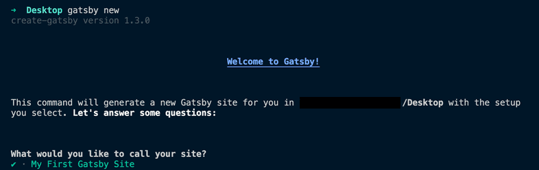
Note :
For this Tutorial, your Gatsby CLI should be v3 or newer. To check
what version you have installed, run the following command:
gatsby --version
Need to update? Run the command below to get the latest version of
the Gatsby CLI: npm install -g gatsby-cli
Let’s take a closer look at the process:
-
Open the command line, and use the cd command to change
directories into the folder where you want to create your new
Gatsby site. For example, if you wanted to create your new site
on your desktop, you might type:
cd Desktop
-
Run the following command from the command line. This will start
up the interactive prompt to help you create a new Gatsby site.
gatsby new
Having trouble with gatsby new? If you had
trouble globally installing gatsby-cli in Part 0, you can also
create a new site by running npm init gatsby from the command
line instead of gatsby new.
-
When the prompt asks, “What would you like to call your site?” enter a name for your site.
What would you like to call your site? ✔ · My First Gatsby
Site
-
When the prompt asks,“What would you like to name the folder where your site will
be created?”
use the default folder name, which will be based on the site
name you chose.
What would you like to name the folder where your site will
be created? ✔ Desktop/ my-first-gatsby-site
-
When the prompt asks,“Will you be using a CMS?”
select “No (or I’ll add it later)”.
✔ Will you be using a CMS? · No (or I'll add it later)
In the future, you can use these options to tell gatsby new
what features you want to add to your site, and gatsby new
will automatically configure them for you. It’s a much quicker
way to set up new projects. But in this first site, you’ll set
things up manually to learn about how Gatsby’s pieces fit
together.
-
When the prompt asks,“Would you like to install a styling system?”
select “No (or I’ll add it later)” . (You’ll
add styles manually later.)
✔ Would you like to install a styling system? · No (or I'll
add it later)
-
When the prompt asks,“Would you like to install additional features with other
plugins?”
use the arrow and Space keys to select
“Build and host for free on Gatsby Cloud” ,
then use the arrow and Enter keys to select
“Done”. This tells gatsby new to add a plugin
called gatsby-plugin-gatsby-cloud to your site. Don’t worry
about the details of this just yet. You’ll learn about plugins
later on in the Tutorial. For now, all you need to know is that
this plugin will help your site work better when you deploy it
with Gatsby Cloud.
-
The prompt will show you a summary of what gatsby new will do.
It should look something like the output below.
Thanks! Here's what we'll now do:
🛠 Create a new Gatsby site in the folder my-first-gatsby-site
🔌 Install gatsby-plugin-gatsby-cloud ? Shall we do this?
(Y/n) › Yes
-
When the prompt asks,“Shall we do this?” enter
“Y” . The gatsby new command will start
building your site. Your internet download speed will affect how
long this command takes to run. After it finishes, you should
see a message like this:
🎉 Your new Gatsby site My First Gatsby Site has been
successfully created at ~/Desktop/my-first-gatsby-site.
Start by going to the directory with
cd my-first-gatsby-site
Start the local development server with
npm run develop
See all commands at
https://www.gatsbyjs.com/docs/gatsby-cli/
Congratulations, you’re now the owner of a brand new Gatsby site!
So far, you’ve generated the code for your site, but what does it
actually look like in a web browser like Firefox or Google Chrome?
To find out, you’ll first need to start up your site’s local
development server.
The development server is a useful tool for when
you’re working on your site locally (from your own computer). When
your development server is running, you can use a web browser to
interact with your local copy of your site. That way, you can test
out changes to your code, to make sure they work before you actually
publish a new version of your site to the internet.
To start up your development server, do the following:
-
In the command line, change into the directory you created for
your site: ~/Desktop
cd my-first-gatsby-site
Tip : Whenever you want to run any commands
for your site, you need to be in the context for that site.
That is, your command line needs to be pointed at the
directory where your site’s code lives.
-
From your site directory, start the development server by
running the following command: ~/Desktop/my-first-gatsby-site
gatsby develop
If you weren’t able to install the Gatsby command line
interface globally, you can start your development server
using the following command instead:
npm run develop
-
After a few moments, the command line should output a message
like the following, telling you your development server is ready
to go!
You can now view my-first-gatsby-site in the browser. ⠀
http://localhost:8000/
View GraphiQL, an in-browser IDE, to explore your site's data
and schema ⠀ http://localhost:8000/___graphql
-
Open your favorite web browser and navigate to
http://localhost:8000.
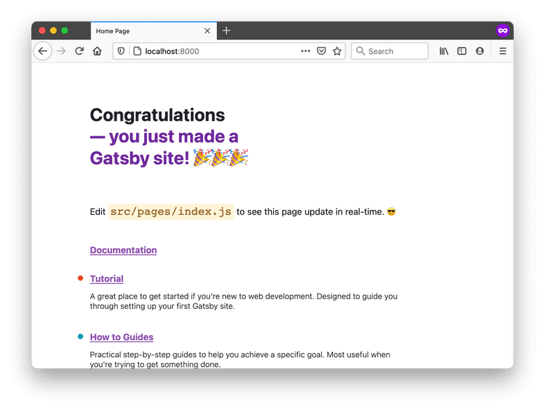
And there it is: your very first Gatsby site! 🎉
You’ll be able to visit the site locally at http://localhost:8000/
for as long as your development server is running. (That’s the
process you started by running the gatsby develop command.) To stop
running that process (or to “stop running the development server”),
go back to your terminal window, hold down the “control” key, and
then hit “c” (ctrl-c). To start it again, run gatsby develop again!
Note : If you are using VM setup like vagrant
and/or would like to listen on your local IP address, run gatsby
develop --host=0.0.0.0. Now, the development server listens on
both http://localhost and your local IP.
Set up a GitHub repo for your site
GitHub is a website that many developers use to back up and share
their code online. By uploading your code to GitHub, you’ll be able
to work on the same codebase from multiple computers. You’ll also be
able to use Gatsby Cloud to build and host your site.
-
Each codebase on GitHub is stored in its own
repository (also called a “repo”, for short).
To create a new repository for your blog, click the plus icon in
the top-right corner of the navigation bar. Select “New
repository”.
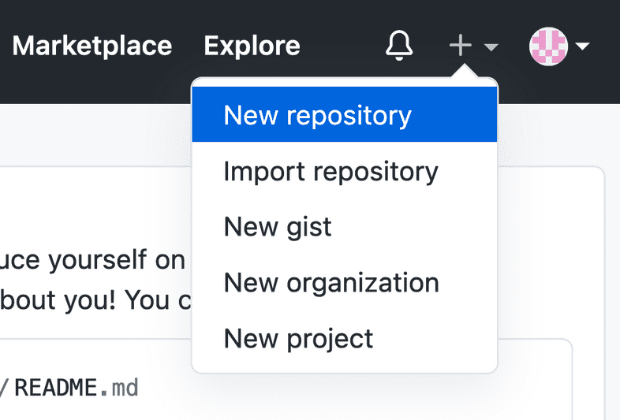
-
When filling out the form for your new repo, you can make it
public or private. (This only affects the visibility of your
code on GitHub. Your site will still be visible to everyone once
you deploy it with Gatsby Cloud.) Leave the initialization
option checkboxes unchecked.
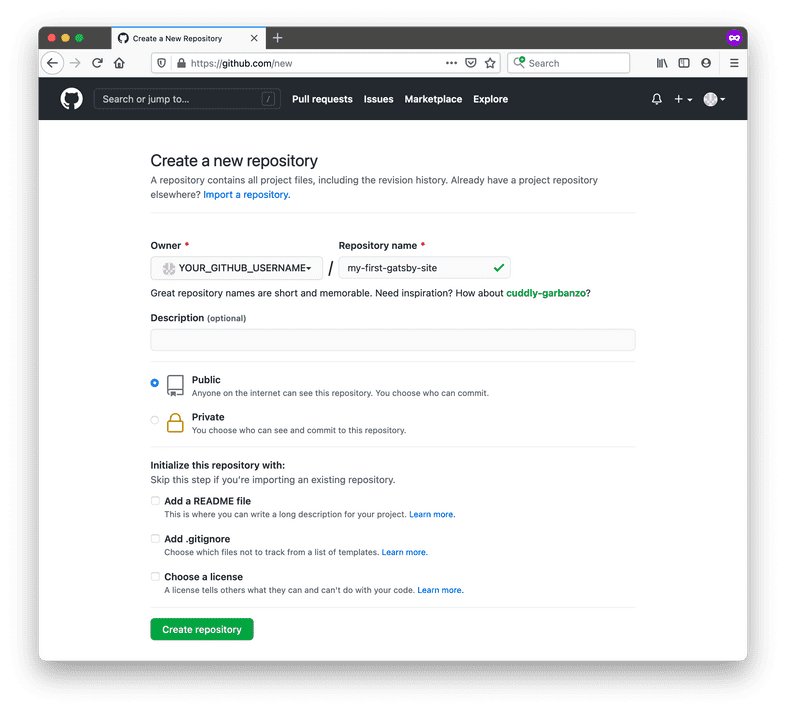
-
To push your existing code from your computer to your new GitHub
repository, enter the commands below in the command line. Be
sure to swap out YOUR_GITHUB_USERNAME for your actual username
and YOUR_GITHUB_REPO_NAME with the name you gave your GitHub
repo (like my-first-gatsby-site).
git remote add origin
https://github.com/YOUR_GITHUB_USERNAME/YOUR_GITHUB_REPO_NAME.git
git branch -M main
git push -u origin main
Using GitHub for the first time?
If you get an error about permissions when you try to push your
code to GitHub for the first time, you might need to set up an
SSH key for your GitHub account. This lets GitHub know that your
computer has permission to push code changes to your remote
repos.
For instructions on how to set up an SSH key, follow GitHub’s
guide:
Connecting to GitHub with SSH.
Now you have a copy of your code saved on GitHub’s servers. In the
next step, you’ll connect your Gatsby Cloud account to the GitHub
repo you just created.
Build your site with Gatsby Cloud
Gatsby Cloud is an infrastructure platform that is specifically
optimized for building, deploying, and hosting Gatsby sites. Once
you connect your Gatsby Cloud account to your GitHub repository,
Gatsby Cloud will build your site and make it available for others
on the internet to see.
To connect your code on GitHub to your Gatsby Cloud account, do the
following:
-
Go to your
Gatsby Cloud Dashboard.
Click on the “Add a site” button.
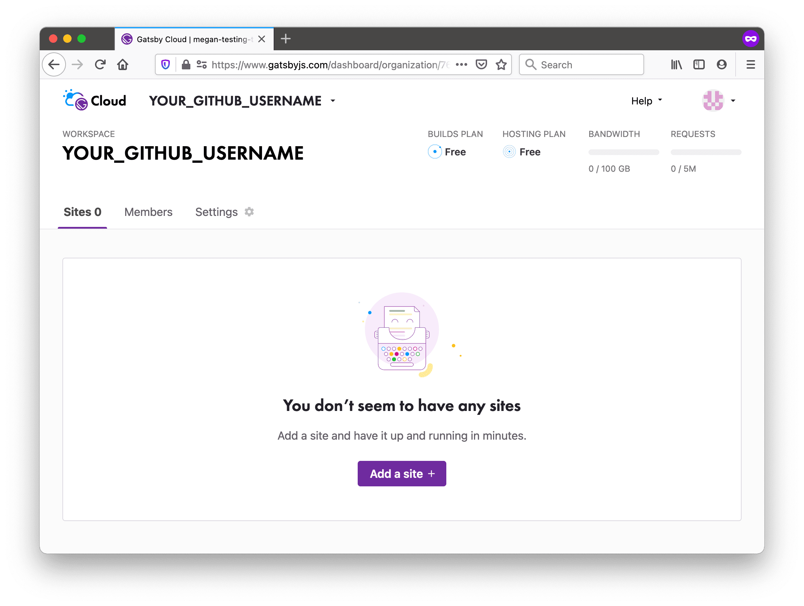
-
The next few steps will help you add your site to Gatsby Cloud.
First, select
“Import from a Git repository” and click the
“Next” button at the bottom of the page.
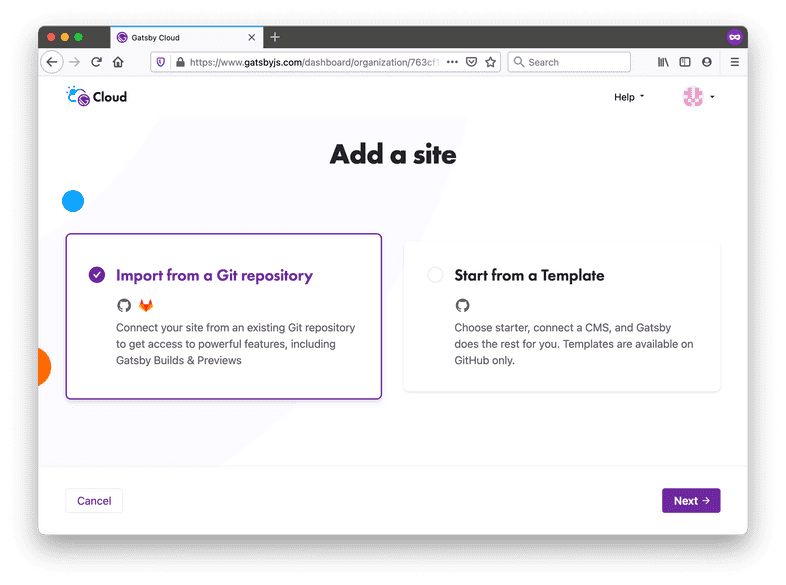
-
Select GitHub as the Git provider.
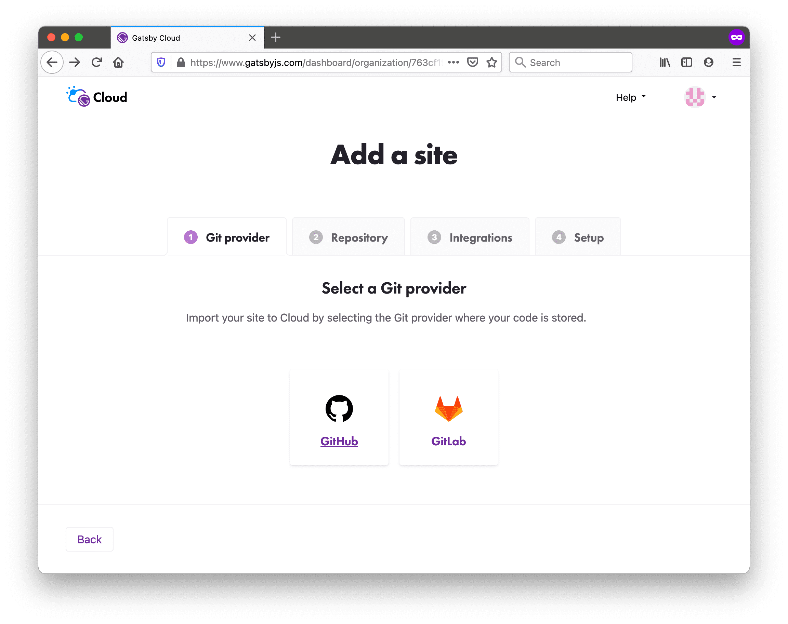
-
If this is your first time connecting GitHub to Gatsby Cloud,
you’ll need to give Gatsby Cloud permission to access your
GitHub account. When asked,“Where should we host this new project?”
click the “Select destination” button.
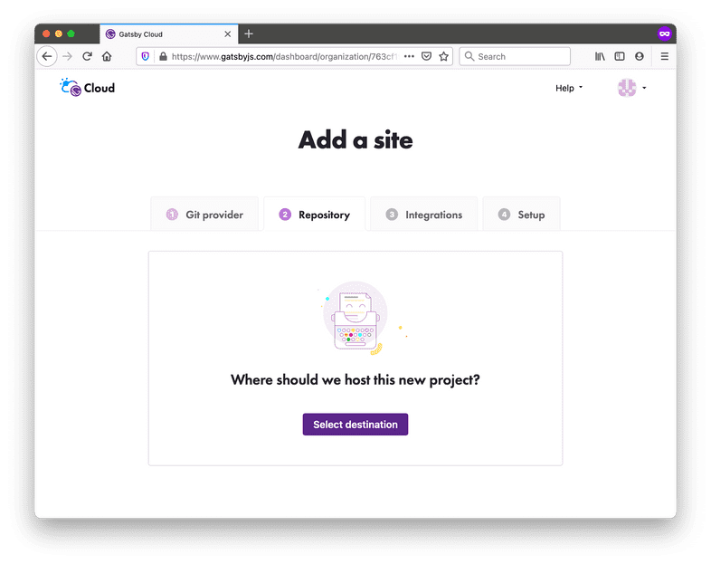
-
A new browser window should open, where GitHub will ask you
whether you want to give Gatsby Cloud permission to your GitHub
repositories. You can choose whether to give Gatsby Cloud access
to all of your GitHub repositories or to only the repository you
created (my-first-gatsby-site). Then click “Install”.
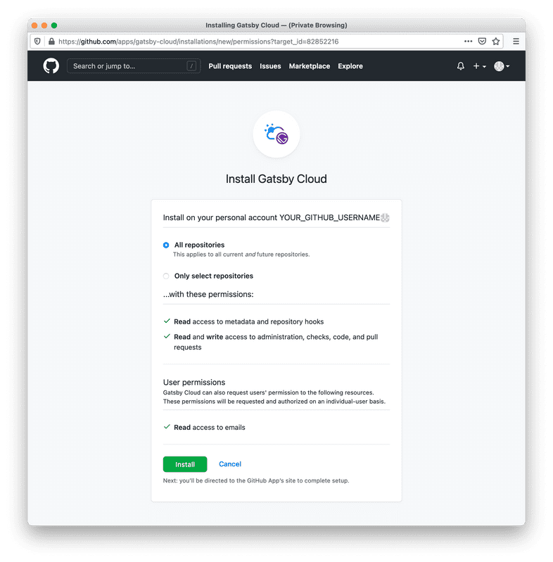
-
Now, when you go back to the Gatsby Cloud window, the
“Select a Repository” dropdown should list your
GitHub repository. Select it.
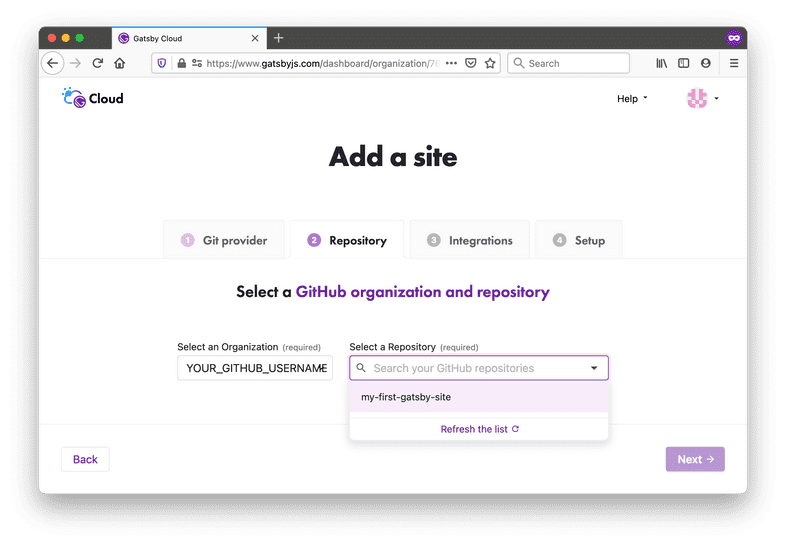
-
Once you select your repo, a few more input fields will show up.
These let you tell Gatsby Cloud where to look in your GitHub
repo for your Gatsby site. You can also change what Gatsby Cloud
will name your site.
Leave the default settings and click the
“Next” button.
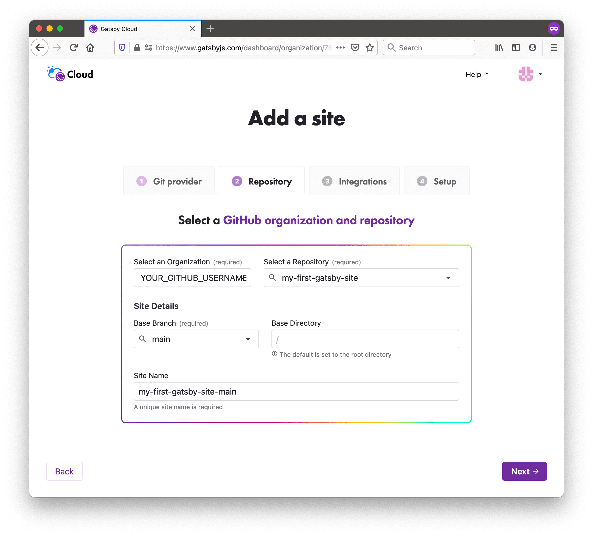
-
Gatsby Cloud will ask you if you want to add any optional
integrations to your site. For future projects, this might be
useful if you want to use a CMS. But for now, click the
“Skip this step” button.
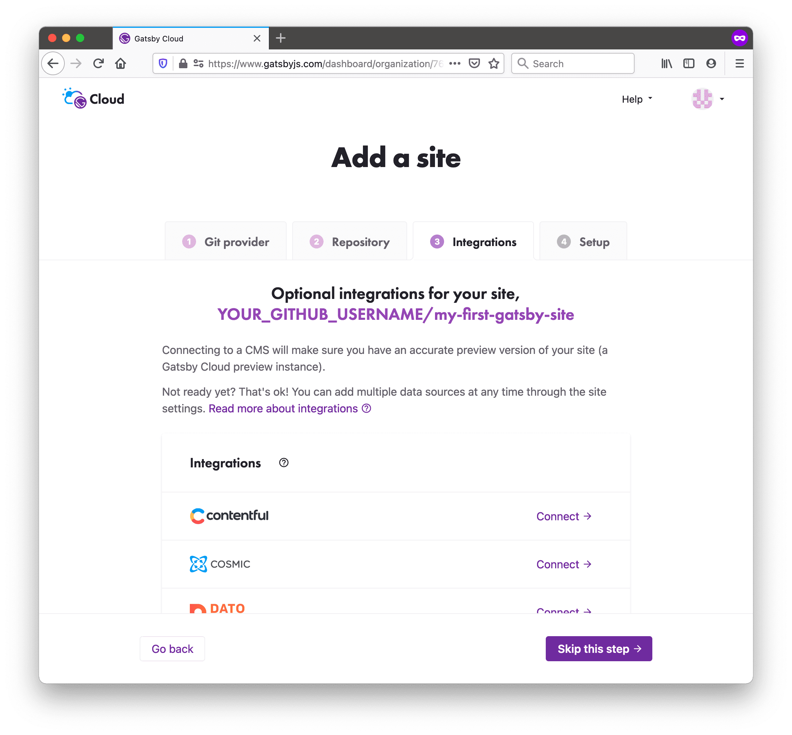
-
Gatsby Cloud will also ask if you want to add any environment
variables. Skip this section, and click the
“Create site” button.
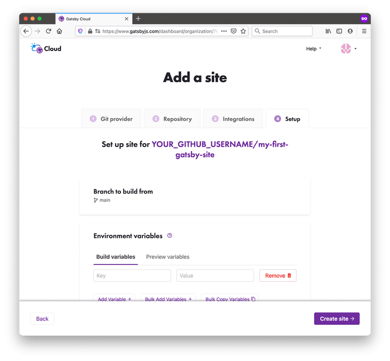
-
Now that your site has been created, you’ll be taken to a site
dashboard where you can see the status of your builds. Gatsby
Cloud should start building your site automatically. You’ll see
a link to your new site, which is automatically hosted on Gatsby
Cloud. You can share this link with anyone, and they’ll be able
to see your site online!
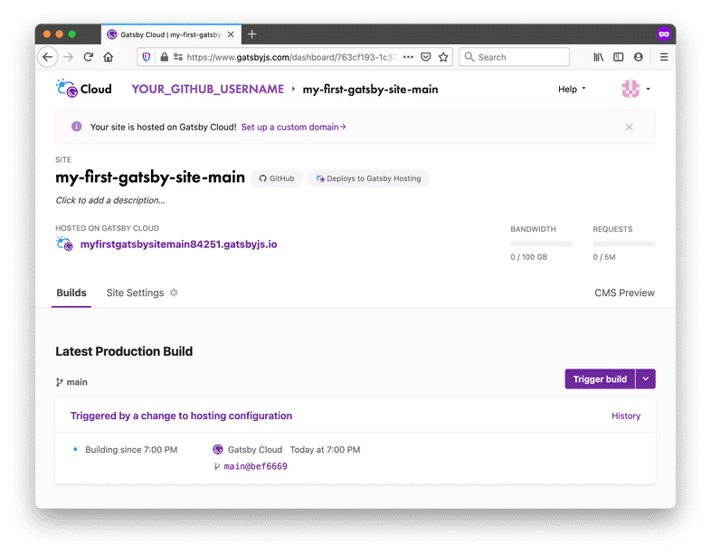
You did it! Your Gatsby site is now online! 👏
Every time you push a new change to the main branch of your GitHub
repo, Gatsby Cloud will see the changes and automatically start a
build for the new version of your site.
Tip: There will be a unique URL for each build
(like
https://build-49535320-b3ae-4761-bbeb-f8f7fa07e0fc.gtsb.io/), and
a URL that always has the latest build (like
my-first-gatsby-site-main.gatsbyjs.io). You’ll mostly want to
share the human-readable URL, so that people can always see the
most up-to-date version of your site. But in some cases (like when
you’re trying to debug a specific build of your site) it can be
helpful to use the unique build URL.
In this section, you learned how to create a new Gatsby site and
deploy it online using Gatsby Cloud. As a quick review, here’s the
diagram outlining the process:
Expand for detailed description
First, you write the code for your Gatsby site from your computer.
When you’re ready to make your changes live on the internet, you
go through the following steps:
-
You push your changes from your computer to a remote repository
on GitHub. GitHub is an online platform for storing code for
your projects.
-
Gatsby Cloud watches your GitHub repository for changes. When it
sees your new changes, Gatsby Cloud builds your site from your
code on GitHub.
-
Gatsby Cloud hosts the finished version of your site at a unique
URL, which users can use to access the latest version of your
site.
Share Your Feedback!
Our goal is for this Tutorial to be helpful and easy to follow.
We’d love to hear your feedback about what you liked or didn’t
like about this part of the Tutorial.
Use the “Was this doc helpful to you?” form at the bottom of this
page to let us know what worked well and what we can improve.